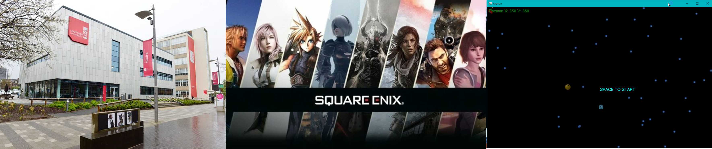

My Portfolio
im currently studying game development at staffordshire university. Im learn the C++ language and have worked on one game currently using the C++ language in visual studios. the game that i have worked on is pacman, I have got pacman moveing in all four directions, I have a display of munchies on scrren, and a ghost that moves left and right. During my first week at being at staffordshire university they put on a game jam where I was put into a group of 5 and we had role on what to do to build the game. My task was the design the characters as then i had little knowledge on coding in unity; in the skills section the image dsplay of the game show your character at the bottom and enemies at the top, I drew those characters from references.
i definatily by the end of working want to create my own game and publish them for the public the play and bring smiles to there faces and have then feel emosions as they get attached to my characters or enjoy the storyline through there experience at playing the games. i hope to start at small companies and work my way to bigger ones like Square enix. Bellow will be a few videos of the two game previews that i have currently worked on for semmater 1, year 1 of studying game development.